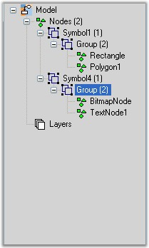
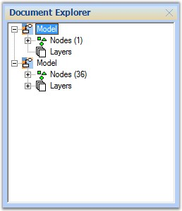

Document Explorer allows you to visualize the details of various objects that are added onto the diagram control at run-time. The layers will be listed under the Layers node and other objects like shapes, links, lines and text editor will be listed under Nodes node.
The properties of the Document Explorer are listed below with their respective descriptions.
|
Property |
Description |
|
BackColor |
Background color of the component. |
|
BorderStyle |
Border style for the component. It can be FixedSingle, Fixed3D or None. |
|
CheckBoxes |
Boolean value indicating whether check boxes should be displayed besides the nodes. |
|
ItemHeight |
Height of the tree view node. |
|
Enabled |
Indicates if the control is enabled. |
|
FullRowSelect |
Indicates whether the whole row (through out the width of the TreeView) is selected when the corresponding node is selected. |
|
HideSelection |
Removes the highlight from the selected node when the control loses focus. |
|
HotTracking |
Indicates whether the selected node will interact with the user by giving a link-like appearance. |
|
ImageIndex |
Default image index for the nodes. |
|
ImageKey |
Default image key for the nodes. |
|
Imagelist |
Imagelist with images to be used for the nodes. |
|
Indent |
Indentation of child nodes in pixels. |
|
LabelEdit |
Boolean value indicating whether nodes labels can be edited. |
|
LineColor |
Color of the lines that connects the nodes of the TreeView. |
|
Nodes |
Node Collection of the TreeView control. |
|
PathSeparator |
String Delimiter used for the path returned by a node's Fullpath property. |
|
Scrollable |
Enables scroll bars if required. |
|
SelectedImageIndex |
Default image index for the selected nodes. |
|
SelectedImageKey |
Default image key for the selected nodes. |
|
ShowLines |
Indicates whether lines are displayed between sibling nodes and between parent and child nodes. |
|
ShowNodeToolTips |
Indicates whether tooltips will be displayed on the nodes. |
|
ShowPlusMinus |
Indicates whether plus / minus buttons are shown next to parent nodes. |
|
ShowRootLines |
Indicates whether lines are shown between root nodes. |
|
StateImageList |
ImageList used for custom state images. |
|
Visible |
Sets visibility of the control. |
|
Method |
Description |
|
AttachModel |
Adds Diagram Model to the Document Explorer. |
The important events of Document Explorer are as follows,
|
Event |
Description |
|
Click |
Occurs when the component is clicked. |
|
DoubleClick |
Occurs when the component is double-clicked. |
|
AfterCheck |
Occurs when a check box on a tree node has been checked or unchecked. |
|
AfterCollapse |
Occurs when a node has been collapsed. |
|
AfterExpand |
Occurs when a node has been expanded. |
|
AfterLabelEdit |
Occurs when the text of a node has been edited by the user. |
|
AfterSelect |
Occurs when the selection has been changed. |
|
BeforeCheck |
Occurs when a check box on a tree node is about to be checked or unchecked. |
|
BeforeCollapse |
Occurs when a node is about to be collapsed. |
|
BeforeExpand |
Occurs when a node is about to be expanded. |
|
BeforeLabelEdit |
Occurs when the text of a node is about to be edited by the user. |
|
BeforeSelect |
Occurs when the selection is about to change. |
|
DrawNode |
Occurs in owner draw-mode, when a node needs to be drawn. |
|
NodeMouseClick |
Occurs when a node is clicked with the mouse. |
|
NodeMouseDoubleClick |
Occurs when a node is double-clicked with the mouse. |
Programmatically, the properties can be set as follows.
|
[C#]
documentExplorer1.AttachModel(model1); documentExplorer1.Dock = DockStyle.Right; documentExplorer1.BackColor = System.Drawing.SystemColors.Window; documentExplorer1.Location = new System.Drawing.Point(0, 377); documentExplorer1.Size = new System.Drawing.Size(200, 100); documentExplorer1.BorderStyle = System.Windows.Forms.BorderStyle.Fixed3D; documentExplorer1.ShowNodeToolTips = true; |
|
[VB]
documentExplorer1.AttachModel(model1) documentExplorer1.Dock = DockStyle.Right documentExplorer1.BackColor = System.Drawing.SystemColors.Window documentExplorer1.Location = New System.Drawing.Point(0, 377) documentExplorer1.Size = New System.Drawing.Size(200, 100) documentExplorer1.BorderStyle = System.Windows.Forms.BorderStyle.Fixed3D documentExplorer1.ShowNodeToolTips = True |

Figure 41: Document Explorer
Sample code snippet for documentExplorer1.AfterSelect Event
|
[C#]
documentExplorer1.AfterSelect+=new TreeViewEventHandler( documentExplorer1_AfterSelect );
private void documentExplorer1_AfterSelect(object sender,TreeViewEventArgs e) { // Update diagram's selection list depending on TreeNode Tag if ( e.Node.Tag is Node ) { Node nodeTemp = e.Node.Tag as Node; if ( nodeTemp != null ) { if (nodeTemp.Visible && nodeTemp.Root.Equals(this.diagram1.Model)) { diagram1.View.SelectionList.Clear(); diagram1.View.SelectionList.Add(e.Node.Tag as Node); } else { propertyEditor.PropertyGrid.SelectedObject = nodeTemp; } } } } |

Figure 42: Document Explorer